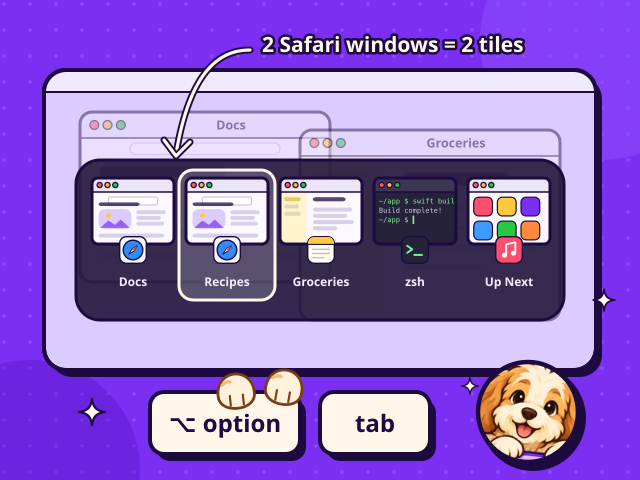

Alt+Tab, finally on the Mac.
Cmd+Tab shows one icon per app, even when that app has five windows open. DogBar’s Option+Tab shows every single window as its own tile, just like on Windows. Hold Option, tap Tab, let go, and you’re in the exact window you wanted.